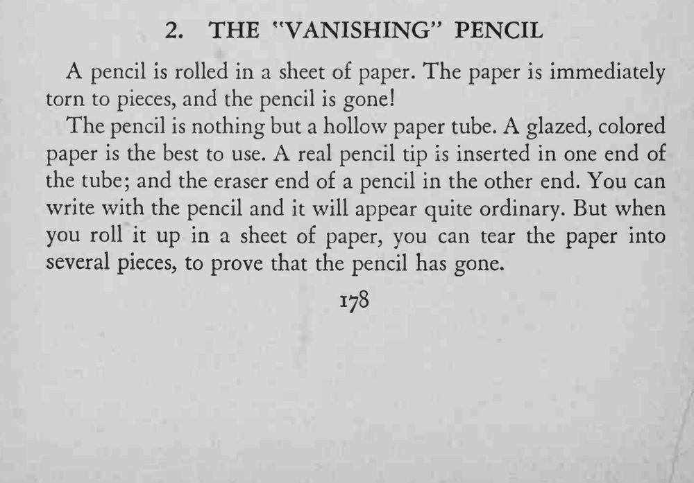

一支铅笔被卷进纸里，纸随即被撕成碎片，铅笔竟一同消失，碎片里再也找不到它。
纸管要卷得紧实、彩纸要上光，写字时才不软塌；撕纸时动作要大，别让人看出碎片的形状。

A pencil is rolled in a sheet of paper. The paper is immediately torn to pieces, and the pencil is gone! The pencil is nothing but a hollow paper tube. A glazed, colored paper is the best to use. real pencil tip is inserted in one end of the tube; and the eraser end of a pencil in the other end. You can write with the pencil and it will appear quite ordinary. But when you roll it up in a sheet of paper, you can tear the paper into several pieces, to prove that the pencil has gone.